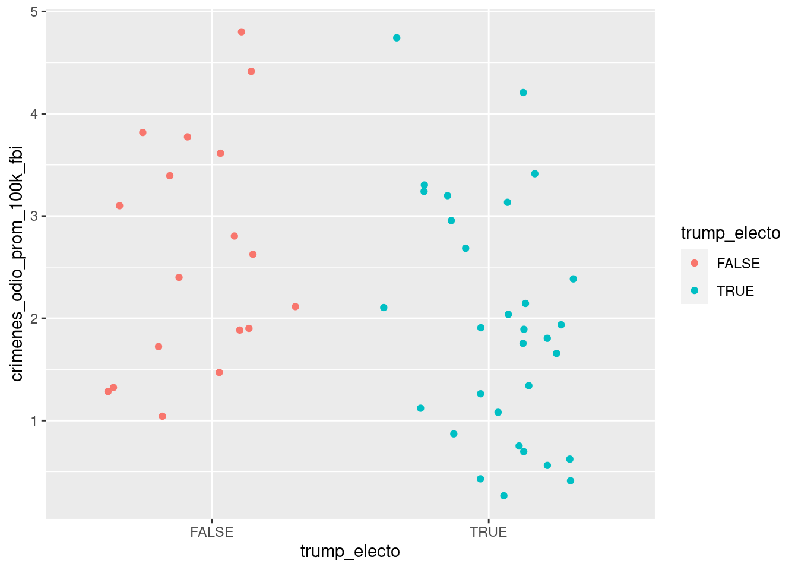
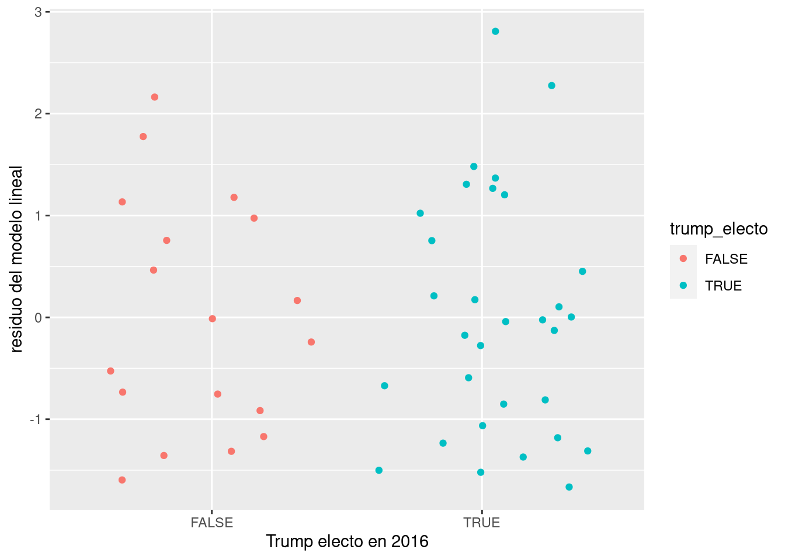

7 Modelado estadístico
Llegamos a un tema de gran interés para quienes realizan investigaciones formales. La posición central que tiene el modelado en la investigación científica se debe a que cuantifica relaciones: permite pasar de decir “Los afroamericanos suelen pagar más en la adquisición de autos” a “Los vendedores hacen ofertas finales a los afroamericanos $287 dólares más caras que a los blancos”1. La cuantificación permite realizar comparaciones, algo clave para entender un fenómeno estudiado: antes y después, con o sin tratamiento, en un lugar o en otro.
En términos matemáticos, se habla de “modelar” debido a que estamos creando un modelo, una reconstrucción simplificada (¡simplificada en extremo!) de cómo funciona un proceso observado en el mundo real. En un modelo de datos, siempre tenemos al menos
- Una variable resultante, también llamada variable “dependiente”,
- Una o más variables predictoras, también llamadas “explicativas”
El modelado de datos puede ser utilizado para dos propósitos:
Predecir el valor de una variable resultante en base a valores conocidos de las variables predictoras. Aquí no interesa tanto entender cómo es que las variables interactúan entre sí, o por qué lo hacen. Mientras las predicciones sean acertadas, o se acerquen lo suficiente, el modelo cumple su cometido. Los modelos predictivos se emplean en una enorme variedad de aplicaciones: inversión en bolsa, prevención de fraude, publicidad online, fijación de primas en seguros de riesgo, etc.
Explicar la relación entre una variable dependiente y todas las demás (las explicativas), buscando determinar si la relación es significativa. Los modelos explicativos son los que se favorecen en investigación académica, ya que ayudan a entender el fenómeno modelado.
Existen muchísimas técnicas para modelar datos, algunas de ellas simples como la regresión lineal, y otras mucho más complejas, como las redes neuronales. Vamos a practicar con las primeras.
La humilde regresión lineal, fácil de explicar y muy fácil de resolver con la ayuda de una computadora, es el caballito de batalla del modelado estadístico. A pesar de que no es adecuada para ciertos tipo de datos, y de que existen métodos más modernos que explotan mucho más el potencial de las computadoras, la regresión lineal sigue siendo una herramienta de uso muy extendido. Un poco por costumbre, y otro porque es el método más fácil de interpretar, lo que favorece entender y comunicar sus resultados.
Este capítulo le debe mucho a ModernDive: An Introduction to Statistical and Data Sciences via R por Chester Ismay y Albert Y. Kim, disponible en forma gratuita en http://moderndive.com/. ModernDive es un recurso muy recomendable para quienes quieran profundizar su conocimiento más allá de los temas que veremos a continuación. Vamos a usar el paquete de R homónimo, moderndive, que acompaña al libro y provee funciones que facilitan el aprendizaje de modelos estadísticos.
Antes de continuar, lo instalamos (¡sólo hace falta realizar esto una vez!)
install.packages("moderndive")Y lo activamos:
library(moderndive)7.1 Regresión lineal simple
La encarnación más sencilla de la regresión lineal es la simple o univariada. Tenemos nuestra variable \(y\), numérica, y una sola variable predictora \(x\), que puede ser numérica o categórica.
Para poner en práctica los conceptos repasados en este capítulo, vamos a recurrir a un dataset compilado por FiveThirtyEight, un sitio web dedicado al análisis estadístico y periodístico de datos de política, economía y deportes. Sus artículos suelen ser acompañados de los datos originales utilizados para el análisis, lo que permite a la audiencia verificar los hallazgos y realizar sus propias pesquisas.
El dataset con el que trabajaremos registra la tasa promedio de crímenes de odio reportados en Estados Unidos durante el período 2010-2015, a nivel estado, junto con indicadores demográficos de cada lugar. Los datos fueron presentados por FiveThirtyEight en un artículo que explora la relación entre desigualdad socioeconómica y crímenes de odio.
Descarguemos entonces el dataset (que hemos traducido pra facilitar su uso), y echemosle un vistazo como ya sabemos hacer:
crimenes_odio <- read.csv("https://cdaj.netlify.app/data/crimenes_odio_EEUU.csv")
summary(crimenes_odio)## estado mediana_ingreso_hogares pct_desocupados
## Length:50 Min. :35.52 Min. :2.800
## Class :character 1st Qu.:48.36 1st Qu.:4.200
## Mode :character Median :54.61 Median :5.050
## Mean :54.96 Mean :4.922
## 3rd Qu.:60.65 3rd Qu.:5.700
## Max. :76.17 Max. :7.300
##
## pct_reside_area_metro pct_secundaria_completa pct_no_ciudadanos
## Min. : 31.00 Min. :79.90 Min. : 1.00
## 1st Qu.: 63.00 1st Qu.:83.97 1st Qu.: 3.00
## Median : 78.50 Median :87.50 Median : 4.00
## Mean : 74.52 Mean :86.91 Mean : 5.34
## 3rd Qu.: 88.50 3rd Qu.:89.80 3rd Qu.: 8.00
## Max. :100.00 Max. :91.80 Max. :13.00
## NA's :3
## pct_pobreza_blancos indice_gini pct_no_blancos pct_votantes_trump
## Min. : 5.00 Min. :0.4190 Min. : 6.00 Min. :30.00
## 1st Qu.: 8.00 1st Qu.:0.4400 1st Qu.:19.25 1st Qu.:42.00
## Median : 9.00 Median :0.4530 Median :27.50 Median :49.50
## Mean : 9.28 Mean :0.4522 Mean :30.94 Mean :49.90
## 3rd Qu.:10.00 3rd Qu.:0.4657 3rd Qu.:42.00 3rd Qu.:57.75
## Max. :17.00 Max. :0.4990 Max. :81.00 Max. :70.00
##
## crimenes_odio_100k_splc crimenes_odio_prom_100k_fbi trump_electo
## Min. :0.06745 Min. :0.2669 Mode :logical
## 1st Qu.:0.14219 1st Qu.:1.2826 FALSE:19
## Median :0.22576 Median :1.9371 TRUE :31
## Mean :0.27761 Mean :2.1924
## 3rd Qu.:0.34681 3rd Qu.:3.1361
## Max. :0.83285 Max. :4.8019
## NA's :4 NA's :1Aclaremos el significado de cada columna:
| Variable | Definición |
|---|---|
estado |
Nombre del estado |
mediana_ingreso_hogares |
Mediana del ingreso de hogares (en miles USD), 2016 |
pct_desocupados |
Porcentaje de población desocupada, Sept. 2016 |
pct_reside_area_metro |
Porcentaje de población que reside en áreas metropolitanas, 2015 |
pct_secundaria_completa |
Porcentaje de adultos (25+) con educación secundaria completa, 2009 |
pct_no_ciudadanos |
Porcentaje de población sin ciudadanía, 2015 |
pct_pobreza_blancos |
Porcentaje de residentes blancos que viven en pobreza, 2015 |
indice_gini |
Indice Gini, 2015 |
pct_no_blancos |
Porcentaje de población no blanca, 2015 |
pct_votantes_trump |
Porcentaje de votantes en las elecciones presidenciales 2016 que votaron por Donald Trump |
crimenes_odio_100k_splc |
Crímenes de odio cada 100.000 habitantes, Southern Poverty Law Center, 2016 |
crimenes_odio_prom_100k_fbi |
Promedio anual de crímenes de odio cada 100.000 habitante, FBI, 2010-2015 |
Con el poder de summary(), comprobar que la incidencia de crímenes de odio varía de forma considerable entre estados. El promedio anual 2010-2015 reportado por el FBI (variable “crimenes_odio_prom_100k_fbi”) va de 0,2 a casi 5 incidentes cada 100.000 habitantes. Algo similar ocurre con la cantidad reportada con otra metodología, los datos para 2016 del Southern Poverty Law Center (“crimenes_odio_100k_splc”): el rango va de apenas 0,067 incidentes cada 100.000 habitantes hasta 0,83 (¡12 veces más!).
7.1.1 Regresión con una variable numérica
Hagamos nuestra pregunta pregunta a contestar con una regresión lineal: ¿Cómo ha se relaciona el nivel de ingresos con la incidencia de crímenes de odio?
Como dijimos en el capítulo de visualización, los scatterplots son útiles para mostrar la relación entre dos variables. Usemos uno para visualizar la relación entre estas dos variables, para intentar anticipar los resultados de la regresión lineal.
# Si no lo hicimos antes, activamos el paquete tidyverse
library(tidyverse)## ── Attaching packages ─────────────────────────────────────── tidyverse 1.3.1 ──## ✔ ggplot2 3.3.3 ✔ purrr 0.3.4
## ✔ tibble 3.1.7 ✔ dplyr 1.0.9
## ✔ tidyr 1.2.0 ✔ stringr 1.4.0
## ✔ readr 1.4.0 ✔ forcats 0.5.1## ── Conflicts ────────────────────────────────────────── tidyverse_conflicts() ──
## ✖ dplyr::filter() masks stats::filter()
## ✖ dplyr::lag() masks stats::lag()ggplot(data = crimenes_odio) +
geom_point(aes(x = mediana_ingreso_hogares, y = crimenes_odio_prom_100k_fbi)) +
labs(title = "Correlación entre ingesos medios por hogar y crímenes de odio",
subtitle = "Crímenes cada 100.000 habitantes, promedio 2010-2016",
x = "mediana de ingresos por hogar (miles USD)",
y = "tasa de crímenes")## Warning: Removed 1 rows containing missing values (geom_point).Los opiniones pueden variar pero aquí parece mostrarse una correlación más bien débil entre las variables, en forma positiva. Esto es, el incremento de la mediana de ingresos por hogar resulta en un incremento en la tasa de crímenes de odio, pero en este caso no de forma drástica. Una correlación negativa sería lo opuesto: que el incremento de la variable explicativa estuviera asociado a un decremento de la variable explicada. Además del signo de una correlación, otra medida importante es su intensidad. La intensidad de una correlación va de -1 (correlación negativa total) a 1 (correlación positiva total). Una correlación de cero significa que las dos variables son por completo independientes. En en ese caso, saber cuánto vale una no nos ayuda a estimar el valor de la otra.
Para obtener la correlación entre dos variables podemos usar get_correlation, una función provista por el paquete moderndive. Ponemos el nombre de la variable a explicar en el lado izquierdo del signo “~” (o “tilde”), y ponemos el nombre de la variable explicativa en el lado derecho. Esta forma de escribir la relación entre variables es común en las funciones estadísticas de R, y se le llama “notación de fórmula”. No hay que preocuparse mucho por ella, ya nos acostumbraremos a usarla.
crimenes_odio %>%
get_correlation(crimenes_odio_prom_100k_fbi ~ mediana_ingreso_hogares,
na.rm = TRUE)Usamos el parámetro na.rm = TRUE para descartar las filas donde no contamos con un valor para cualquiera de las dos variables de interés. Nuestro dataset efectivamente tiene algunos valores faltantes (véase otra vez la salida de summary(crimenes_odio) para comprobarlo), así que con eso evitamos que la función falle al intentar calcular la correlación.
¿A partir de qué valor consideramos que existe una correlación considerable? La verdad es que no hay una regla a seguir, pero inventemos una. Si el valor absoluto de la correlación es…
- de 0,7 a 1: de fuerte a total
- de 0,5 a 0,7: de moderada a fuerte
- de 0,3 a 0,5: de débil a moderada
- menor a 0,3: de nula a débilEl valor que obtuvimos no llega al 0,3; podemos decir que la correlación es débil. Pero aún desconocemos algo quizás más importante: un valor preciso del “efecto” que la variable de ingresos tiene sobre la tasa de crímenes. Eso es lo que vamos a determinar con la regresión lineal. Usamos la palabra “efecto” entre comillas para aclarar una de las limitaciones del modelado estadístico: podemos probar correlación, pero no causalidad. Es decir, no podemos probar que una variable causa a la otra; en todo caso, probamos que se mueven juntas y en base a ello podríamos diseñar un experimento que permita comprobar causalidad.

Vamos a la regresión lineal entonces, para establecer de una buena vez la correlación entre ingresos y crímenes de odio. Usamos la función lm() (por “linear model”), así:
modelo_ingresos <- lm(crimenes_odio_prom_100k_fbi ~ mediana_ingreso_hogares,
data = crimenes_odio)
modelo_ingresos##
## Call:
## lm(formula = crimenes_odio_prom_100k_fbi ~ mediana_ingreso_hogares,
## data = crimenes_odio)
##
## Coefficients:
## (Intercept) mediana_ingreso_hogares
## 0.41199 0.03259¡Eso es todo! Hemos construido un modelo estadístico; ahora tenemos que aprender a usarlo. Obsérvese que volvió aparecer el simbolillo que denota una fórmula, ~. Usado como primer argumento de lm(), significa “crimenes_odio_prom_100k_fbi vs mediana_ingreso_hogares”, es decir “estimar el efecto en la variable crimenes_odio_prom_100k_fbi cuando incrementa el valor de mediana_ingreso_hogares”, usando los datos contenidos en el dataframe crimenes_odio.
El resultado de lm(), que hemos guardado dentro de la variable modelo_ingresos es un tipo de objecto con el que no hemos trabajado hasta ahora. No es un dataframe, sino una lista que contiene distintos atributos del modelo estadístico. No hace falta detenernos en eso ahora.
Retomando nuestra pregunta… ¿cuál es el efecto? Lo obtenemos dándole el modelo que generamos a la función get_regression_table(), que devuelve una prolija tabla:
get_regression_table(modelo_ingresos)Ahí está. En nuestro modelo, el efecto estimado de la variable mediana_ingreso_hogares es de 0.033. Significado: incrementando en una unidad la variable predictora, la variable a predecir se incrementa en 0.033. Dicho de otra manera, y expresándolo en las unidades de nuestras variables: por cada mil dólares de incremento en la mediana de ingresos por hogar, la tasa de crímenes de odio cada 100.000 habitantes se incrementa en 0.033 casos.
El otro término que aparece, “intercept” es la intersección. Para interpretar el modelo, la intersección rara vez tiene utilidad. Para lo que sí sirve es para trazar la línea que permite “predecir” valores para años en los que no tenemos observaciones. Recordemos la fórmula que define una línea recta:
\[ y = a + b \times x \]
A cada punto en \(x\) le corresponde un valor en \(y\) que se obtiene multiplicando a \(x\) por la pendiente, \(b\), y sumando la intersección, \(a\). Se le llama “intersección” u “ordenada al origen” porque es el valor donde la recta intersecta con el eje de las y: cuando \(x\) vale \(0\), la fórmula nos da \(y = b\).
En una regresión lineal, el “modelo” que creamos es precisamente eso: una línea. Tan simple como eso. Lo que la hace tan potente es que la podemos usar como bola de cristal: para saber cuanto valdría la variable dependiente ante un valor determinado de la variable predictora, revisamos por donde pasa la línea.
Lo podemos visualizar con ayuda de ggplot(), que por supuesto incluye una función para trazar líneas. Parámetros necesarios: intercept (intersección) y slope (pendiente). Usamos los respectivos valores que nos indica el modelo, 0.412 y 0.033.
ggplot(data = crimenes_odio) +
geom_point(aes(x = mediana_ingreso_hogares, y = crimenes_odio_prom_100k_fbi)) +
labs(title = "Correlación entre ingesos medios por hogar y crímenes de odio",
subtitle = "Crímenes cada 100.000 habitanes, promedio 2010-2016",
x = "mediana de ingresos por hogar (miles USD)",
y = "tasa de crímenes",
caption = "con línea de regresión") +
geom_abline(aes(intercept = 0.412, slope = 0.033), color = "blue")## Warning: Removed 1 rows containing missing values (geom_point).Es hora de dar una definición oficial para una regresión lineal, y es esta: es la línea que describe la ecuación:
\[ \hat{y} = b_0 + b_1 \times x \] Obsérvese que se trata de la ecuación de una recta, \(y = a + b \times x\), con otros nombres. En voz alta, se leería así “Cada predicción del valor de y, llamada \(\hat{y}\), se obtiene multiplicando a la variable predictora \(x\) por su coeficiente \(b_1\) y sumándole el valor de la intersección \(b_0\)”. En otras palabras, a cada valor de \(x\) (las observaciones de la variable explicativa) le corresponde un punto en la recta trazada por el modelo. La altura sobre la recta de las \(y\) para ese punto es el valor predicho para la variable dependiente. Por ejemplo, si quisiéramos estimar la
Ya que estamos, aprendamos otro truco. ggplot() puede agregar a nuestros scatterplots una capa con la línea de la regresión lineal, en forma automática. La función geom_smooth() se usar para explicitar patrones en los datos. Tal como otras de la familia ggplot, espera que se le diga que variables asignar a x e y, más un parámetro method con el método solicitado para trazar una línea de tendencia. Aquí usamos method = "lm" por linear model, el modelo lineal.
ggplot(data = crimenes_odio) +
geom_point(aes(x = mediana_ingreso_hogares, y = crimenes_odio_prom_100k_fbi)) +
labs(title = "Correlación entre ingesos medios por hogar y crímenes de odio",
subtitle = "Crímenes cada 100.000 habitantes, promedio 2010-2016",
x = "mediana de ingresos por hogar (miles USD)",
y = "tasa de crímenes",
caption = "con línea de regresión vía geom_smooth()") +
geom_smooth(aes(x = mediana_ingreso_hogares, y = crimenes_odio_prom_100k_fbi),
method = "lm")## `geom_smooth()` using formula 'y ~ x'## Warning: Removed 1 rows containing non-finite values (stat_smooth).## Warning: Removed 1 rows containing missing values (geom_point).Hacer una regresión lineal se trata de encontrar la línea que atraviesa nuestra nube de puntos de modo tal que la suma de las distancias de cada punto a la línea sea la menor posible. Es un problema matemático que puede resolverse con distintas técnicas (álgebra lineal, geometría, etc) que no vamos a discutir aquí. Confiaremos en R para hacer los cálculos.
En la relación ingresos - crímenes las distancias entre los puntos (las observaciones) y la línea (el modelo) varían bastante entre casos. Eso indica que el modelo no describe con gran precisión la dinámica de la relación entre las variables analizadas.
En general, es inusual encontrar una correlación nítida entre variables “en la vida real”, sobre todo cuando estudiamos procesos complejos cuyo comportamiento describe patrones más complejos que una relación lineal pura.
¿Debería preocuparnos eso? No siempre. A veces la regresión sirve más para cuantificar la relación entre dos variables, en sentido general, y no para realizar certeras predicciones o caracterizar de forma exacta un fenómeno con solo disponer de una variable explicativa. Si nos conformamos con eso, lo importante es que nuestro modelo sea “justo”, proveyendo un estimado con errores mas o menos parejos. Es decir, sin observaciones puntuales para las que el modelo resulta mucho peor que para otras.
Una parte importante del análisis basado en regresiones es revisar estos errores -la distancia entre el valor predicho y la observación-, y decidir si ameritan buscar una explicación. Para ello, lo mejor es empezar por prestar atención a los residuos.
7.1.2 Revolviendo los residuos
Los residuos, en la jerga estadística, no son otra cosa que las diferencias encontradas entre el valor que predice un modelo para una variable y el valor observado en la práctica. Es decir, el valor para cada punto de \(y - \widehat{y}\). Los residuos representan el desvío de cada observación respecto al valor “esperado” por el modelo.
Cuando los desvíos son pequeños, es decir cuando los residuos son pequeños, decimos que nuestro modelo se ajusta bien a los datos observados. Cuando los residuos son grandes ocurre lo contrario, y quizás deberíamos buscar otra forma de describir -de modelar-, la relación entre las variables.
Prestemos atención a los residuos de nuestro modelo. Podemos extraer los residuos (y algunas cosillas más!) usando la función get_regression_points(),
residuos_regresion <- get_regression_points(modelo_ingresos)
residuos_regresionObtenemos los resultados del modelo para cada observación, o sea cada fila de nuestro dataframe original. La columna que buscamos está al final (residual). También tenemos
crimenes_odio_prom_100k_fbi: El valor observado en los datos que usamos para el modelo, para la variable que intentamos predecir; es el valor de \(y\)mediana_ingreso_hogares: El valor que toma la variable predictora, alias \(x\)crimenes_odio_prom_100k_fbi_hat: Este es el valor que “predice” el modelo, alias “y con sombrerito” (de ahí lo de hat), o \(\hat{y}\)residual: y por fin los residuos, la diferencia \(y - \hat{y}\) para cada fila.
Podemos notar que en algunos casos el error / residuo / desvío es bastante grande, en relación a la magnitud de la variable a predecir. Esto era esperable dada la débil correlación entre variables.
Siempre podemos esperar una cierta divergencia entre las predicciones y los valores observados, por lo que los residuos siempre tendrán (en general) un valor distinto a cero. Pero es importante que los residuos se distribuyan al azar, sin indicios de patrones sistemáticos. Si así fuere, podemos considerar que nuestro modelo es adecuado.
¿Cómo determinamos que no exhiben patrones sistemáticos? Una vez mas, se trata de una evaluación bastante subjetiva, y cada quien estará conforme dependiendo del contexto y la experiencia previa. Aún así podemos argumentar en favor de la adecuación del modelo cuando:
- El promedio de los residuos se aproxima a cero; es decir, que los residuos positivos se cancelan con los negativos, promediando cerca de cero.
- El valor de los residuos no depende del valor de \(x\); es decir, no se observa un crecimiento (o decrecimiento) sistemático de la magnitud de los residuos a medida que\(x\) crece
Veamos si nuestro modelo cumple con 1., calculando el promedio de los residuos:
mean(residuos_regresion$residual)## [1] 0.00002040816Dio un resultado infinitesimal, cercano a 0, así que condición cumplida.
Es probable que al ejecutar la línea de código el resultado aparezca expresado en notación científica: 2.040816e-05, que significa \(2.040816 * 10^{-5}\). En palabras, “2.040816 multiplicado por 10 elevado a la potencia -5”. Lo cual efectivamente es 0.00002040816.
Por defecto, R utiliza notación científica para representar de forma compacta los números con muchos espacios decimales. Si -como la mayoría de los seres humanos- estamos poco acostumbrados a ese formato, podemos desactivarlo ejecutando esta línea: options(scipen = 999). Esto hace que R se abstenga de usarlo por el resto de la sesión de trabajo. Podemos comprobarlo ejecutando una vez más la línea de código que calcula el promedio, y el resultado saldrá en todo su esplendor de espacios decimales.
¿Y que pasa con 2., la magnitud de los residuos sin crecer ni decrecer de forma notable a medida que se incrementa la variable predictora? Veamoslo en un gráfico de dispersión:
ggplot(residuos_regresion) +
geom_point(aes(x = mediana_ingreso_hogares, y = residual)) +
labs(x = "Mediana del ingreso de hogares", y = "residuo del modelo lineal")No se ve una “rampa” ascendente o descendente de los residuos a medida que aumenta la variable de ingresos, así que condición cumplida.
7.1.3 ¿Cómo estamos de confianza?
¿Ya estamos parra considerar que el modelo útil, o al menos “significativo”, que aporta evidencia para considerar que hay una relación entre nuestras dos variables?
Falta un chequeo más, y más importante aún. Es el de evaluar que tanta certeza, o confianza, tenemos en que hay una correlación entre estas variables en la vida real, más allá de la que se ve en los datos que tenemos disponibles. Para eso recurrimos al llamado intervalo de confianza. Volvamos a revisar la tabla con los estimados de nuestro modelo:
get_regression_table(modelo_ingresos)El efecto estimado de “mediana_ingreso_hogares” es de 0.033, un números positivo. Esto indica que cuando esa variable predictora crece, también crece la variable a predecir -la tasa de crímenes-. Pero en todo análisis estadístico siempre hay una incertidumbre. Una forma de cuantificarla es con un rango de valores, llamado intervalo de confianza. El rango incluye al valor estimado para el efecto, que es el más probable, pero nos recuerda que no tenemos certeza absoluta de que ese número sea exacto, es sólo una aproximación. Por eso ofrece un valor mínimo que sería razonable, y un valor máximo: los vemos en las columnas lower_ci y upper_ci.
Y aquí la mala noticia: si revisamos los valores para nuestra variable predictora, vemos que su estimado máximo es 0.071 y su mínimo es -0,006. ¡Un valor negativo! Esto implica que, aún cuando el estimado más probable es un efecto positivo, cabe dentro del rango de valores razonables que el efecto sea 0, o sea nada. E incluso ligeramente negativo, cambiando el sentido de lo que nos indica el estimado del modelo.
Cuando ocurre esto, que el intervalo de confianza pasa por el cero, decimos que nuestro modelo no es estadísticamente signifcativo. O sea, no aporta evidencia acerca de la relación entre variables que estamos investigando. Pero a no ponernos tristes: esto es normal, y útil, porque nos permite verificar nuestras hipótesis de trabajo.
7.1.4 Regresión con una variable categórica
El dataset de crímenes de odio no incluye variables categóricas además de la de estado. Pero podemos crearnos una con facilidad: “¿Ganó Donald Trump en las elecciones presidenciales de 2016?”. Para sumar esta variable podemos usar mutate() para sumar una columna, y como contenido asignarle el resultado de evaluar si Trump obtuvo al menos el 47% de los votos. Es un umbral de corte definido revisando los resultados de aquella elección, nada riguroso pero servirá para practicar ahora:
crimenes_odio <- crimenes_odio %>%
mutate("trump_electo" = pct_votantes_trump > 46)Esto nos da una columna trump_electo de tipo “logical”. Es decir que contiene “cierto” o “falso” (TRUE o FALSE). Una variable dicotómica, que cae dentro del tipo categórico.
Comencemos por explorar los datos con una visualización.
ggplot(data = crimenes_odio) +
geom_point(aes(x = trump_electo,
y = crimenes_odio_prom_100k_fbi,
color = trump_electo)) ## Warning: Removed 1 rows containing missing values (geom_point).Se vislumbra que una menor tasa de crímenes de odio parece estar asociada a los estados donde Trump ganó la elección en 2016. Eso si, la profusión de puntos hace que muchos terminen superpuestos, haciendo imposible determinar cuántos ocupan cada posición (un problema llamado overplotting en inglés). Una variante de geom_point() llamada geom_jitter() resuelve este problema al “sacudir” los puntos, sumando a cada uno un pequeño valor al azar para que se separe de los que comparten su posición. Es un buen ejemplo de la paradoja por la cual reducir la precisión de la información a veces permite entender mejor lo que está ocurriendo. Usamos geom_jitter() igual que geom_point():
ggplot(data = crimenes_odio) +
geom_jitter(aes(x = trump_electo,
y = crimenes_odio_prom_100k_fbi,
color = trump_electo))## Warning: Removed 1 rows containing missing values (geom_point).
Algún ojo avizor habrá notado que la clasificación por color no es necesaria, ya que el resultado de la elección está señalado por la posición en el eje de las x. El color cumple aquí una función más que nada cosmética, en pos de hacer al gráfico maś atractivo a la vista.
Otra forma de visualizar la diferencia es con un histograma, facetado por la variable “trump_electo”:
ggplot(crimenes_odio) +
geom_histogram(aes(crimenes_odio_prom_100k_fbi, fill = trump_electo)) +
facet_wrap(~ trump_electo)## `stat_bin()` using `bins = 30`. Pick better value with `binwidth`.## Warning: Removed 1 rows containing non-finite values (stat_bin).Aquí vemos que en los estados donde Trump resultó electo es más frecuente una tasa baja de crímenes, incluso menores a 1 cada 100.000 (valores mínimos que no se alcanzan en la otra categoría.)
Bien, parece haber una relación entre resultados electorales y crímenes de odio, aunque no la hemos cuantificado. Para eso, recurrimos a una regresión lineal con variable explicativa categórica. Se obtiene de la misma manera que antes, no hay cambios en la forma de invocar lm() por el hecho de que la variable ahora sea categórica en vez de numérica.
modelo_eleccion <- lm(crimenes_odio_prom_100k_fbi ~ trump_electo, data = crimenes_odio)
get_regression_table(modelo_eleccion)¿Qué ocurrió aquí? lm() inspeccionó el contenido de la variable “trump_electo” y encontró dos niveles o categorías (TRUE y FALSE). Tomó el primero en orden alfabético, “FALSE”, como línea de base. La intersección (intercept) de la regresión es el promedio de crímenes cada 100.000 habitantes para los estados donde Trumpo no ganó la elección -donde es FALSE ese hecho.
Para la categoría restante, el estimado representa la diferencia respecto a la línea de base: para un esatdo donde Trump si fue electo (“TRUE”), podemos esperar -en promedio- una tasa menor en 0.705 unidades.
Prestemos atención a los residuos.
residuos_modelo_eleccion <- get_regression_points(modelo_eleccion)
residuos_modelo_eleccionCalculemos el promedio de los residuos, para verificar que están cerca del cero,
mean(residuos_modelo_eleccion$residual)## [1] 0.00002040816y grafiquemos su dispersion de acuerdo a l categoría que les toca, para ver si es similar:
ggplot(residuos_modelo_eleccion) +
geom_jitter(aes(x = trump_electo, y = residual, color = trump_electo)) +
labs(x = "Trump electo en 2016", y = "residuo del modelo lineal")
Notamos que:
- Los residuos tienen un promedio cercano a cero, o sea que están repartidos en forma pareja entre positivos y negativos. Condición cumplida.
- La dispersión no crece ni decrece en forma drástica en categorías distintas, rasgo de un buen modelo. Esto es un poco subjetivo -lo evaluamos a ojo- pero damos por cumplida la condición.
Ahora vamos al veredicto final: ¿Es estadísticamente significativo el resultado?
Prestemos atención al intervalo de confianza, dado por las columnas lower_ci y upper_ci
get_regression_table(modelo_eleccion)El intervalo no pasa por el cero! El rango va de -1,396 a -0,014. Por tenue que pueda llegar a ser, tenemos confianza en que habrá algún efecto.
¡Hemos realizado un modelo estadísticamente significativo!
7.2 Regresión con múltiples variables
Hasta aquí hemos usado la regresión lineal para hacer explícita la relación entre una variable resultante \(y\) y una única variable predictiva o explicativa \(x\). En algunos de nuestros resultados pudimos intuir que el agregado de alguna variable explicativa adicional podría mejorar nuestras predicciones. De eso se trata la regresión lineal múltiple: incorporar una cantidad arbitraria de variables al modelo, buscando representar las múltiples dinámicas que inciden en el fenómeno estudiado.
Una buena noticia es que, en general, agregar variables a nuestro modelo estadístico no requiere mucho esfuerzo adicional. En la época en que los cálculos matemáticos debían hacerse sin la ayuda de una computadora, sumar variables sin ton ni son debía tener poca gracia, debido a la creciente cantidad de cálculos a resolver. Para nosotros que dejamos la tarea en manos de software especializado, el problema es el opuesto. Es tan fácil sumar variables al modelo, que debemos evitar la tentación de arrojar todo dentro de la fórmula de regresión lineal y decidir luego que parece importante y que no.
Aclarado eso, en este caso tenemos un dataset en el que las variables han sido elegidas precisamente por su potencial para afectar el fenómeno a estudiar. Por eso podemos incluir todas las variables un modelo complejo, asumiendo que el nivel de ingresos, el porcentaje de desocupados, el de habitantes indocumentados, etc. pueden explicar en alguna medida la incidencia de crímenes de odio.
Vamos a modelar el promedio 2010-2016 de crímenes de odio cada 100.000 habitantes, como resultante de todas las variables disponibles excepto “estado” y “crimenes_odio_100k_splc”. Esta última debido a que se parece mucho a la variable que queremos predecir -con seguridad estan estrechamente relacionadas-, por lo cual es de esperarse que si la agregamos al modelo nos de una altísima correlación, pero sin mucho valor: ya lo sabíamos. También vamos a dejar fuera a la variable “trump_electo”, ya que no es otra cosa que una versión simplificada, con menos información, de la variable de porcentaje de electores.
Pasando a la práctica, la única diferencia respecto a una regresión lineal simple es que usamos + para agregar variables en la fórmula de lm():
modelo_mult <- lm(crimenes_odio_prom_100k_fbi ~
mediana_ingreso_hogares + pct_desocupados + pct_reside_area_metro +
pct_secundaria_completa + pct_no_ciudadanos + pct_pobreza_blancos +
indice_gini + pct_no_blancos + pct_votantes_trump,
data = crimenes_odio)Veamos la tabla con los resultados:
get_regression_table(modelo_mult)¿Cómo interpretamos esos resultados? Más o menos de la misma manera que con la regresión simple. Como antes, tenemos un coeficiente para la intersección, al que no prestamos mucha atención porque no nos dice nada de la relación entre las variables. Lo que cambia es que esta vez tenemos muchas variables predictoras en lugar de una, cada una con su estimado Los estimados positivos indican que la relación entre la variable predictora y la resultante es de correlación positiva (cuando una crece la otra tiende a crecer también) y lo opuesto para los estimados negativos.
Pero vayamos a lo que ya sabemos que es muy importante: ¿Alguno de estos estimados es estadísticamente significativo? Si prestamos atención a las columnas del intervalo de confianza, vemos que sólo “pct_no_ciudadanos” tiene un rango que no pasa por el cero: su mínimo y su máximo son positivos. Al estimar el efecto de todas estas variables juntas -o como suele decirse, “controlando” por todas estas variables- el porcentaje de residentes sin ciudadanía es la única con efecto significativo.
Notemos que el porcentaje de votantes de Trump, que en un modelo simple había sido una variable significativa, ahora ya no lo es. A eso se le llama controlar por una variable: Otra forma de decirlo es que “controlando por el porcentaje de población sin ciudadanía” el voto a Trump no tiene efecto significativo en la incidencia de crímenes de odio.
Para narrar estos resultados, podemos intentar algo así:
- Cuando las demás variables se mantienen constantes (es decir, en estados con atributos similares en ingresos, desocupación, índice Gini, etc.) con el incremento de una unidad en el porcentaje de residentes indocumentados es esperable un incremento de 0,232 crímenes de odio en el promedio interanual cada 100.000 habitantes.
Pensemos un poco si esto tienen sentido. La correlación positiva entre presencia de población migrante o en situación irregular y crímenes de odio es esperable si asumimos que este grupo suele ser el más vulnerable a los crímenes de odio. Por otra parte, quizás tenga tanto sentido como para ser algo obvio. En ese caso, ¡no hemos descubierto nada trascendental! Pero tampoco se le puede pedir tanto a un ejercicio.
Quedan muchos más datos para explorar, hipótesis para comprobar, e interrelaciones para revelar.
7.3 Ejercicios
I. En base a un dataset de nuestra preferencia, mostremos la relación entre dos variables continuas o numéricas usando un gráfico de dispersión (vía geom_point()) y expliquemos lo que muestra el gráfico. Vale usar el dataset que hemos presentado en este capítulo, pero tendrá mucha más gracia jugar con algún otro.
Realicemos un modelo de regresión lineal para esas dos variables. Describamos los resultados, ofreciendo una interpretación.
Mostremos la relación entre una variables categórica y otra continua/numérica, con un gráfico boxplot (mediante
geom_boxplot()) o un gráfico de puntos “sacudidos” (mediantegeom_jitter()). Expliquemos lo que muestra el gráfico.Realicemos un modelo de regresión lineal para esas dos variables, describiendo los resultados sin olvidar interpretarlos.
V. Realicemos una regresión lineal con la variable a predecir de I o III, junto con otras adicionales. Es decir, realizar una regresión con múltiples variables predictoras. Describamos los resultados, interpretándolos. ¿En qué cambian respecto al modelo que usa sólo un predictor?
Con eso cerramos el capítulo, y el manual.
Esperamos haber provisto una introducción satisfactoria al análisis, modelado y visualización de información, y que haya sido tan sólo el inicio de un largo y gratificante recorrido.
¡Gracias por haber llegado hasta aquí!
Véase Aires, Ian “Venta de Autos justa. La discriminación de género y raza en las negociaciones de venta de autos”, 1991, versión en español en Ian Ayres, La discriminación en el Mercado Univ. Palermo, Buenos Aires, 2012↩︎